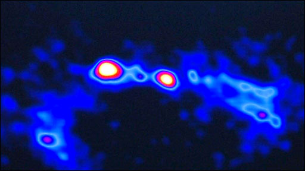
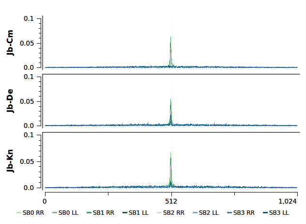

With £18 million funding from UK Research and Innovation (UKRI), through the UKRI Infrastructure Fund, the UK will be leading on 2 additional telescopes, providing a major increase in the sensitivity of the facility. Under the funding, the UK will also be providing expertise in data processing and analysis.
Simons Observatory UK
Telescopes
Details of SO Telescopes
SO:UK
This is the most frequently used mode by observers providing deep high-resolution imaging. SO:UK observations are correlated at Jodrell Bank, in real time, using aperture synthesis techniques. Telescopes spread over 217 km, combined with 512 MHz instantaneous bandwidth, yield overlapping spatial-scale coverage in a single earth-rotation.
This coverage delivers images with angular resolutions up to 50 milli-arcseconds at micro-Jansky sensitivities. On top of these continuum observations, the SO:UK correlator can simultaneously observe narrow spectral windows with very-high frequency resolution, ideal for spectral line observations.
SO:UK + EVN VLBI Mode
When used within the European VLBI Network, SO:UK generates EVN compatible VDIF data which are delivered to JIVE for correlation. Images produced with SO:UK + EVN deliver micro-arcsecond angular resolution without sacrificing the larger scales. Both traditional VLBI (observe now, correlate later) and fibre-linked 'e-VLBI' (real-time correlation) modes are available.
Fast Transient Mode (LoFT-e)
SO:UK can be used to produce exceptional sensitivity and time resolution combinations. This is ideal for FRB searches, low luminosity pulsar observing or even the Search for Extra Terrestrial Intelligence (SETI). Localisation of Fast Transients using SO:UK (LoFT-e) allows a unique combination of both timing and source location solutions.
Contacts
-
SO:UK Contact e-mail
Head of SO:UK Prof Michael Brown -
Postal Address of Jodrell Bank Centre for Astrophysics
SO:UK Suite, Alan Turing Building,
The University of Manchester. M13 9PL UK
Documents
-
Dcumentation
-
Simons Observatory Website
-
SO:UK Wiki Site
Photos